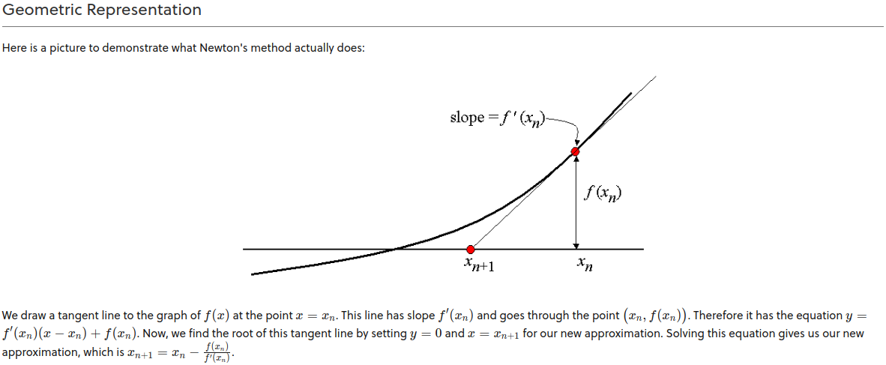

Equation:
Root:
Iteration:
Significant digits:
the input represents the coefficients of the polynomial. For example, [1,0,-2] would represent the equation 1x2 + 0x1 -2x0 simplified: (x2-2)
The Newton-Raphson method (also known as Newton's method) is a way to quickly find a good approximation for the root of a real-valued function f(x) = 0f(x)=0. It uses the idea that a continuous and differentiable function can be approximated by a straight line tangent to it. Learn more here
